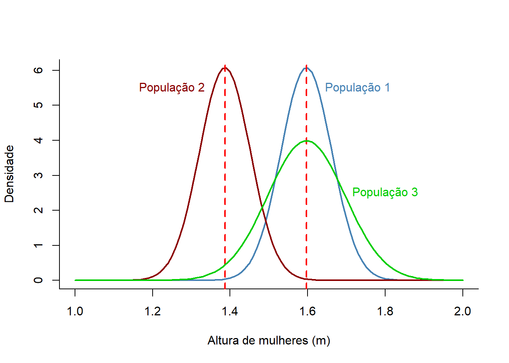
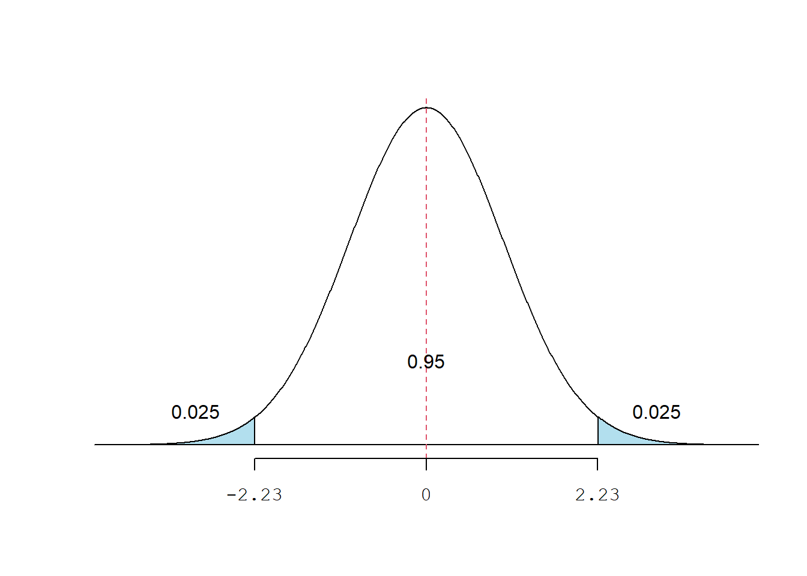
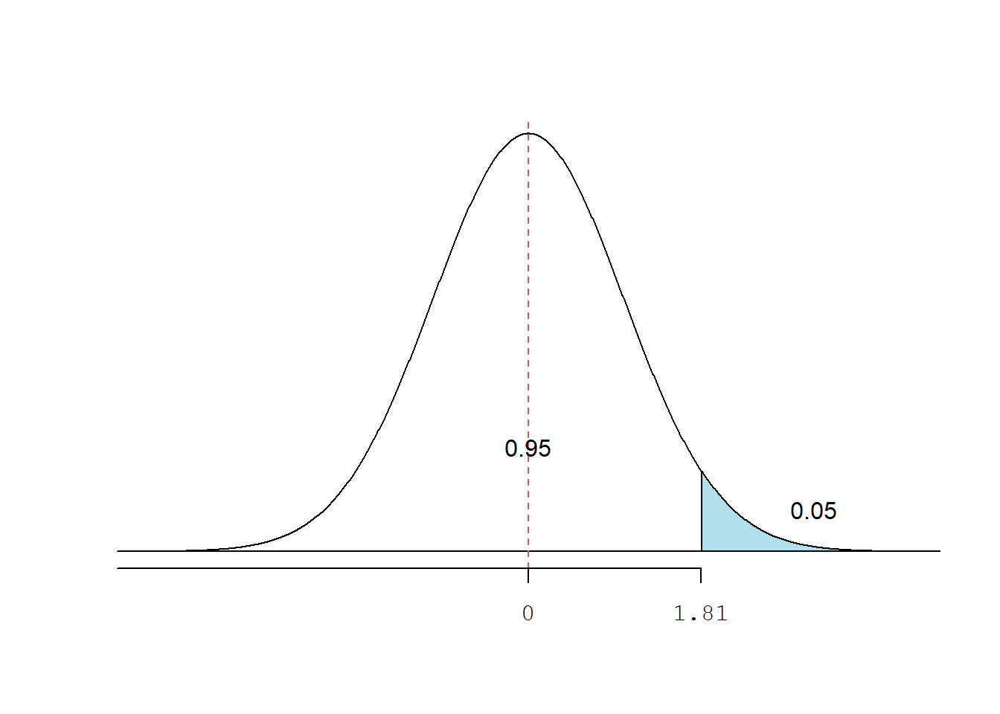

Capítulo 12 Estimação
12.1 Pacotes necessários
pacman::p_load(readxl, dplyr, ggplot2, Rmisc, DescTools)Além desses pacotes, vamos usar uma função denominada shadeform () que desenha uma curva normal com áreas sombreadas. Ela foi criada por Tony Cookson e pode ser encontrada aqui para ser salva em seu diretório de trabalho. Ela deve ser ativada com a função source ("caminho no diretório de trabalho"). Por exemplo, no nosso computador o caminho é:
source("C:/Users/petro/Dropbox/Git_repositório/Arquivos/shadeform.R")12.2 Carregar o dados
Serão usados dados do arquivo dadosMater que devem ser baixados para o diretório de trabalho.
Crie um objeto mater para receber os dados, a partir do diretório de trabalho, executando:
mater <- read_excel ("C:/Users/petro/Dropbox/Git_repositório/Arquivos/dadosMater.xlsx")12.3 Exploração e manipulação do banco de dados
Este banco de dados contém informações de 30 variáveis de 1368 nascimentos consecutivos, em um período de 18 meses, da Maternidade Escola do Hospital Geral de Caxias Sul (HGCS).
Neste momento, usaremos apenas a variável mater$altura, altura das gestantes em metros.
dados <- mater %>% select (altura)
glimpse (dados)## Rows: 1,368
## Columns: 1
## $ altura <dbl> 1.65, 1.66, 1.72, 1.55, 1.60, 1.50, 1.54, 1.63, 1.68, 1.50, 1.6…12.3.1 Resumo dos dados
summary(dados$altura)## Min. 1st Qu. Median Mean 3rd Qu. Max.
## 1.400 1.550 1.600 1.598 1.650 1.850mu <- mean(mater$altura)
dp <- sd(mater$altura)
mu## [1] 1.597968dp## [1] 0.0654786612.3.2 Visualização gráfica
hist(mater$altura,
xlim = c (1.4, 1.85),
main= NULL,
freq = FALSE,
ylab = "Densidade",
xlab = "Altura (m)",
col = "salmon",
las = 1)
box (bty = "L")
curve (dnorm (x,
mean=mu,
sd=dp),
col="red",
lty=1,
lwd=2,
add=TRUE)
Observamos que a variável altura tem uma distribuição simétrica com média = 1.598m e desvio padrão = 0.065m, onde a altura mínima = 1.4m e a máxima = 1.85m.
12.4 Distribuição Amostral
A principal preocupação da inferência estatística é com a qualidade das estimativas dos parâmetros. Procura responder a pergunta: “Quão certos estamos de que a média \(\overline{x}\) está proxima da verdadeira média \(\mu\). A compreensão deste conhecimento é a base da estatística.
Vamos considerar, para fins didáticos, as 1368 mulheres como a população-alvo para qual queremos fazer inferência. Dessa forma, vamos extrair uma amostra de n = 30, dessa população, usando a função sample ().
amostra1 <- sample (dados$altura, 30)Se queremos estimar a média da população com base na amostra1 , a maneira mais intuitiva de fazer isso é simplesmente calcular a média.
mu1 <- mean(amostra1)
mu1## [1] 1.612667dp1 <- sd(amostra1)
dp1## [1] 0.06485705A média da amostra \(\overline{x}\) = 1.613 é chamada de estimativa pontual da média da população. Se pudermos escolher apenas um valor para estimar a média da população, essa é nossa melhor estimativa.
Suponha que uma nova amostra de 30 gestantes seja selecionada e a média recalculada. Provavelmente, não obteremos exatamente a mesma resposta que obtivemos, usando o conjunto de dados amostra1.
amostra2 <- sample (dados$altura, 30)
mu2 <- mean(amostra2)
mu2## [1] 1.618As estimativas geralmente variam de uma amostra para outra e, essa variação amostral, sugere que nossa estimativa pode ser próxima, mas não será exatamente igual ao parâmetro, \(\mu\). O conjunto das possíveis médias amostrais de uma população constituem uma distribuição amostral das médias. Isto também é valido para as estimativas pontuais de outros parâmetros populacionais, como mediana, coeficiente de variação, desvio padrão, por exemplo.
As estimativas geralmente não são exatamente iguais à verdade, mas ficam melhores à medida que mais dados se tornam disponíveis. Ou seja, a média de uma sequência de médias amostrais se aproxima da verdadeira média e a média de todas as possíveia médias é igual a média verdadeira.
A distribuição amostral representa a distribuição das estimativas pontuais com base em amostras de tamanho fixo de uma determinada população. É útil pensar em uma estimativa pontual específica como sendo extraída de tal distribuição. Compreender o conceito de uma distribuição amostral é fundamental para compreender a inferência estatística.
12.5 Erro Padrão
Suponha que se selecione uma quantidade grande de amostras dessa população de gestantes, por exemplo 5000 amostras. Somente podemos realizar isso porque temos disponível todo o conjunto de dados da população, definido, para fins didático, como sendo as alturas das 1368 gestantes. Na prática, isto é muito difícil de acontecer pela quase impossibilidade de se analisar toda a população.
Se fizermos isso, podemos construir uma distribuição amostral para a média da amostra quando o tamanho da amostra é 30, mostrado na Figura.

A distribuição amostral exibida é unimodal e praticamente simétrica. Também está centrada exatamente na média real da população: \(\mu\) = 1.598, linha vertical vermelha. Isso faz sentido. As médias da amostra devem tender a “cair em torno” da média da população.
Podemos ver que as médias amostrais possuem alguma variabilidade em torno da média da população, que pode ser quantificada usando o desvio padrão desta distribuição de médias amostrais: \(\sigma_\overline{x}\)= 0.012. O desvio padrão das médias amostrais nos diz o quão longe a estimativa típica está da média real da população, 1,598 m. Também descreve o erro típico da estimativa pontual e, por esse motivo, costumamos chamar esse desvio padrão de erro padrão (EP) da estimativa.
O desvio padrão associado às estimativas é chamado de erro padrão. Descreve o erro ou incerteza típica associada à estimativa. Está associado à precisão com que estimamos o parâmetro da população.
No exemplo que estamos trabalhando, conhecemos o desvio padrão da população, (\(\sigma\) = 0.065). Matematicamente, o erro padrão é calculado, usando a fórmula
\[ \sigma_\overline{x}=\frac{\sigma}{\sqrt{n}}=\frac{0,065}{\sqrt{30}}=0.012 \]
O desvio padrão da população é tipicamente desconhecido. Ao considerar o caso da estimativa pontual \(\overline{x}\), há um problema: não há como estimar o erro padrão a partir de uma única amostra. No entanto, a teoria estatística, usando o teorema do limite central, fornece uma solução para esse problema. A estimativa pontual tende a ser suficientemente boa quando o tamanho da amostra é de pelo menos 30 e a distribuição da população não é fortemente assimétrica.
Assim, geralmente, usamos apenas o desvio padrão da amostra, \(s\), em vez de \(\sigma\). Quando o tamanho da amostra for menor que 30, precisaremos usar um método para contabilizar a incerteza extra no erro padrão (ver adiante).
Usando o desvio padrão, \(s\), da amostra no lugar do desvio padrão, \(\sigma\), da população, a equação acima, fica assim:
\[ EP_\overline{x}=\frac{s}{\sqrt{n}} \]
12.6 Intervalo de Confiança com Desvio Padrão Populacional Conhecido
Vimos que fornecer uma estimativa pontual para um parâmetro populacional, como a média, raramente é uma medida exata, perfeita. Logo, a atitude lógica é fornecer uma faixa plausível de valores para o parâmetro populacional.
Este intervalo de valores plausíveis para o parâmetro da população é chamado de intervalo de confiança. De acordo com a interessante imagem do OpenIntro Statistics (2015), usar apenas uma estimativa pontual é como pescar em um lago turvo com uma lança e usar um intervalo de confiança é como pescar com uma rede. Ou seja, se usarmos apenas uma estimativa pontual, provavelmente, não atingiremos o parâmetro populacional, entretanto, se usarmos uma gama de valores - um intervalo de confiança - aumentamos a probabilidade de incluirmos o parâmetro.
A estimativa pontual é o mais provável valor do parâmetro e, portanto, faz sentido construir um intervalo ao redor desta estimativa. O erro padrão, que é uma medida da incerteza associada à estimativa pontual, fornece uma orientação para a magnitude do intervalo de confiança.
O erro padrão representa o desvio padrão associado à estimativa e, aproximadamente, 95% das vezes, a estimativa estará dentro de 2 erros padrão do parâmetro. Se o intervalo tiver um tamanho \(\pm\) 2 erros padrão da estimativa pontual, podemos ter cerca de 95% de certeza de que o parâmetro verdadeiro estará incluido nele:
\[ estimativa\ pontual\pm 2\times EP \] Este valor de \(\pm2\times EP\) é denominado de margem de erro (me) e é um valor aproximado. No modelo normal, podemos tornar isso mais preciso usando 1.96 no lugar de 2.
\[ estimativa\ pontual\pm 1,96\times EP \]
12.6.1 Interpretação do Intervalo de Confiança
Qual o significado de 95% de confiança? Para compreender isso, vamos selecionar 20 amostras de n = 30 da população de mulheres e calcular, para cada amostra, a média da altura e o seu intervalo de confiança de 95%. Então, 95% dos intervalos devem conter a média populacional, \(\mu\). Em outras palavras, das 20 amostras que selecionamos, aleatoriamente, existe probabilidade de que uma delas (5%) não contenha a média da população, linha vermelha horizontal, na figura.

A média dessas médias amostrais é igual 1.598m, a mesma média da população 1.598m, com arredondamento até a terceira casa decimal, um erro da ordem de milimetros na altura.
OBSERVAÇÃO: Havendo curiosidade, o banco de dados usado, nestes cálculos e construção do gráfico acima, encontra-se aqui. Onde x são as amostras, y é a média de cada amostra e linf e lsup sãos os limites inferior e superior dos intervalos de confiança de cada amostra, respectivamente.
12.6.2 Exercício 1
Extraia amostras de n = 30, 50, 100 e 1000 da população de gestantes, usada anteriormente, e calcule a média e o \(IC_{95\%}\) para cada amostra e interprete os resutados.
12.6.2.1 Solução
Amostra A - n = 30
amostra_A <- sample(dados$altura, 30)
mu_A <- mean (amostra_A)
mu_A## [1] 1.610667dp_A <- sd (amostra_A)
EP_A <- dp_A/sqrt(30)
alpha <- 0.05 # Nível de significância
zc <- qnorm (1 - (alpha/2)) # z crítico
me_A <- zc * EP_A
linf_A <- mu_A - me_A
lsup_A <- mu_A + me_A
ic_A <- c(linf_A, lsup_A)
ic_A## [1] 1.584541 1.636793Amostra B - n = 50
amostra_B <- sample(dados$altura, 50)
mu_B <- mean (amostra_B)
mu_B## [1] 1.5988dp_B <- sd (amostra_B)
EP_B <- dp_B/sqrt(50)
alpha <- 0.05 # Nível de significância
zc <- qnorm (1 - (alpha/2)) # z crítico
me_B <- zc * EP_B
linf_B <- mu_B - me_B
lsup_B <- mu_B + me_B
ic_B <- c(linf_B, lsup_B)
ic_B## [1] 1.583437 1.614163Amostra C - n = 100
amostra_C <- sample(dados$altura, 100)
mu_C <- mean (amostra_C)
mu_C## [1] 1.6086dp_C <- sd (amostra_C)
EP_C <- dp_C/sqrt(100)
alpha <- 0.05 # Nível de significância
zc <- qnorm (1 - (alpha/2)) # z crítico
me_C <- zc * EP_C
linf_C <- mu_C - me_C
lsup_C <- mu_C + me_C
ic_C <- c(linf_C, lsup_C)
ic_C## [1] 1.595659 1.621541Amostra D - n = 1000
amostra_D <- sample(dados$altura, 1000)
mu_D <- mean (amostra_D)
mu_D## [1] 1.59823dp_D <- sd (amostra_D)
EP_D <- dp_D/sqrt(1000)
alpha <- 0.05 # Nível de significância
zc <- qnorm (1 - (alpha/2)) # z crítico
me_D <- zc * EP_D
linf_D <- mu_D - me_D
lsup_D <- mu_D + me_D
ic_D <- c(linf_D, lsup_D)
ic_D## [1] 1.594189 1.602271Gráfico
1ª Etapa: Criar um dataframe com as médias e os limites inferiores e superiores de cada amostra:
x <- c("A_30", "B_50", "C_100", "D_1000")
y <- c(mu_A, mu_B, mu_C, mu_D)
linf <- c(linf_A, linf_B, linf_C, linf_D)
lsup <- c(lsup_A, lsup_B, lsup_C, lsup_D)
df <- data.frame(x, y, linf, lsup)2ª Etapa: Criar o gráfico:
ggplot(df, aes(x, y)) +
geom_point(size = 4) +
geom_errorbar(aes(ymin = linf, ymax = lsup), width = 0.2) +
geom_hline(yintercept=1.598, color = "red", linetype = "dashed", size = 1) +
theme_classic() +
ylab("Altura (m)") +
xlab ("Amostras")+
coord_flip()
Interpretação
O gráfico mostra, claramente, que à medida que o tamanho amostral aumenta, diminui o intervalo de confiança, tornando as estimativas mais precisas.
12.6.3 Outros Intervalos de Confiança
É possível considerar intervalos de confiança em que o nível de confiança é um pouco superior a 95%, por exemplo 99%. Pense novamente na analogia de tentar pegar um peixe: se quisermos ter mais certeza de que vamos pegar o peixe, devemos usar uma rede mais larga. Portanto, para criar um nível de confiança de 99%, também devemos ampliar nosso intervalo de 95%.
Por outro lado, se quisermos um intervalo com menor confiança, como 90%, precisamos tornar nosso intervalo original de 95% um pouco mais estreito.
A estrutura do intervalo de confiança de 95%, visto anteriormente é igual a:
\[
estimativa\ pontual\pm 1,96\times EP
\]
Como vemos o intervalo de confiança é determinado pela margem de erro (me) e esta é dependente do valor crítico de z que é igual a 1,96 quando o nível de confiança é 95%.
Para outros níveis de confiança, o \(z_{crítico}\) se modifica de acordo o modelo normal e pode ser verificado no R com a função qnorm ():
* Nível de confiança 99%: \(z_{crítico}\) = 2.58
* Nível de confiança 90%: \(z_{crítico}\) = 1.64
Dessa forma, a probabilidade de Z estar entre -1,64 e +1,64 é de 90%, entre -1,96 e +1,96 é de 95% e entre -2,58 e +2,58 é de 99%. Observa-se que à medida que se aumenta o nível de confiança o aumento o intervalo entre os limite inferior e superior.
12.6.4 Exercício 2
Use a amostra A do exercício 1 e calcule o intervalo de confiança de de 90 e 99%. Compare os resultados.
12.6.4.1 Solução
\(IC_{99\%}\)
alpha <- 0.01 # Nível de significância
zc <- qnorm (1 - (alpha/2)) # z críticome_A2 <- zc * EP_A
ic_A2 <- c((mu_A - me_A2), (mu_A + me_A2))
ic_A2## [1] 1.576331 1.645002\(IC_{90\%}\)
alpha <- 0.10 # Nível de significância
zc <- qnorm (1 - (alpha/2)) # z crítico
me_A3 <- zc * EP_A
ic_A3 <- c((mu_A - me_A3), (mu_A + me_A3))
ic_A3## [1] 1.588741 1.632592Interpretação
Repetindo a intervalo de confiança de 95% para comparar:
ic_A## [1] 1.584541 1.636793Observamos que os intervalos aumentam progressivamente com o aumento da confiança. Veja os gráficos abaixo, criados com a função shadeform (), carregada no início do capítulo.
par(mfrow = c(1, 3))
shadenorm(outside = c(1.64, -1.64), color = "steelblue")
abline (h = 0)
text(0, 0.1, "90%", cex = 1.5, col = "black")
shadenorm(outside = c(1.96, -1.96), color = "steelblue")
abline (h = 0)
text(0, 0.1, "95%", cex = 1.5, col = "black")
shadenorm(outside = c(2.58, -2.58), color = "steelblue")
abline (h = 0)
text(0, 0.1, "99%", cex = 1.5, col = "black")
par(mfrow = c(1,1))12.7 Intervalo de Confiança com Desvio Padrão Populacional Desconhecido
Com amostras pequenas, usar o modelo normal para construir intervalos de confiança, gera um erro, pois os pressupostos do teorema do limite central não são respeitados. Quando o desvio padrão populacional, \(\sigma\), é desconhecido e o tamanho amostral é pequeno (< 30), a estimação da média populacional é feita usando a distribuição t.
12.7.1 Distribuição t
A distribuição t, desenvolvida por William Sealy Gosset, em 1908, é semelhante à distribuição normal. Como a curva de distribuição normal, a curva de distribuição t é unimodal, simétrica (em forma de sino) em torno da média e nunca encontra o eixo horizontal. A área total sob uma curva de distribuição t é 1 ou 100%. A curva da distribuição t é mais plana do que a curva de distribuição normal padrão. Em outras palavras, ela é mais achatada e mais espalhada. No entanto, conforme o tamanho da amostra aumenta, a distribuição t aproxima-se da distribuição normal padrão.
O formato de uma curva de distribuição t particular depende do número de graus de liberdade. O número de graus de liberdade (gl) para uma distribuição t é igual ao tamanho da amostra menos um, ou seja, \(gl=n-1\).
O número de graus de liberdade é o único parâmetro da distribuição t. Há uma diferente distribuição t para cada número de graus de liberdade, portanto, a distribuição t se constitui em uma família de distribuições.

Como a distribuição normal padrão, a média da distribuição padrão t é 0. Entretanto, diferente da distribuição normal padrão, cujo desvio padrão é 1, o desvio padrão de uma distribuição t é \(\sqrt gl⁄(gl-2)\) , para gl > 2, que sempre é maior do que 1. Por exemplo, se \(gl = 8\), o desvio padrão será:
dp = sqrt(8/(8-2))
dp## [1] 1.154701Assim, o desvio padrão de uma distribuição t é maior do que o desvio padrão da distribuição normal padrão.
Os valores de \(t_{crítico}\) podem ser obtidos usando a função qt () que usa os seguintes argumentos:
| Argumento | Significado |
|---|---|
| p | probabilidade, igual a \(1-\alpha/2\), considerando-se bicaudal e \(1-\alpha\) quando unicaudal; |
| df | graus de liberdade; |
| lower.tail | lógico; se TRUE, informa a probabilidade da cauda inferior. O padrão é TRUE. |
Assim, o valor do \(t_{crítico}\) para \(gl=10\) é:
qt(0.975, 10, lower.tail = TRUE)## [1] 2.228139Dessa forma, a área compreendida entre \(t=\pm 2,23\) é igual a 95%:
\[ p(-2,23\le t\le 2,23)=0,95 \] 
Quando se considera apenas uma das caudas (unicaudal ou unilateral), o valor do \(t_{crítico}\) para \(gl=10\) é
qt(0.95, 10, lower.tail = TRUE)## [1] 1.812461Assim, a área \(t \le 1,81\) é igual a 95%
\[ p(t\le 1,81)=0,95 \]

12.7.2 Dados para o cálculo do intervalo de confiança
Vamos continuar com o banco de dados das altursa de 1368 gestantes, que consideramos a nossa população. Agora iremos trabalhar com uma amostra de 30 mulheres e fazer inferência para essa população, supondo que os parâmetros dessa população sejam desconhecidos.
amostra <- sample (dados$altura, 30)Se queremos estimar a média da população com base na amostra, a maneira mais intuitiva de fazer isso é, simplesmente, calcular a média e o desvio padrão da amostra.
mu <- mean(amostra)
mu## [1] 1.605667dp <- sd(amostra)
dp## [1] 0.04789956Para termos maior precisão, vamos calcular os intervalos de confiança para esta estimativa, usando a distribuição t.
12.7.3 Cálculo do Intervalo de Confiança com \(\sigma\) desconhecido
12.7.3.1 Cálculo manual
Temos uma amostra de \(n = 30\), \(\overline x = 1.606\) e \(s = 0.048\). Vamos calcular os outros dados para obter o intervalo de confiança, usando uma distribuição t bicaudal e um nível de significância \(\alpha = 0.05\):
n <- 30
alpha <- 0.05
p <- 1 - alpha/2
p## [1] 0.975gl <- n - 1
gl## [1] 29tc <- qt(p, gl, lower.tail = TRUE)
tc## [1] 2.04523EP <- round(dp/sqrt(n),3)
EP## [1] 0.009Onde p é a probabilidade decorrente do nível de significância, gl são os graus de liberdade e EP é o erro padrão. Com dados necessátios, podemos calcular o intervalo de confiança de 95%:
ic <- c((mu - tc * EP), (mu + tc * EP))
round (ic,2)## [1] 1.59 1.62Ou seja, temos uma confiança 95% de que a média populacional desconhecida se encontra entre 1.59 m e 1.62 m.
12.7.3.2 Cálculo usando uma função do R
O R possui algumas funções que calculam o intervalo de confiança para variáveis numéricas, baseadas na distribuição t. Entre elas, a função CI (x, ci = 0.95), incluída no pacote Rmisc:
ic <- CI (amostra, ci = 0.95)
round(ic, 2)## upper mean lower
## 1.62 1.61 1.5912.8 Intervalo de Confiança para uma proporção populacional
Com frequência , necessitanos estimar uma proporção populacional. Como não é possível realizar um censo cada vez que se necessita encontrar o valor de uma proporção da população, normalmente se obtém resultados de pesquisas por amostragem. Portanto, para levar em conta a variabilidade nos resultados obtidos em diferentes pesquisas por amostragem, precisamos conhecer os procedimentos para estimar uma proporção da população
12.8.1 Dados para estimar a proporção populacional
Vamos usar uma amostra aleatória de n = 60 da variável mater$fumo para estimar a proporção de mulheres fumantes.
fumo <- sample (mater$fumo, 60)
glimpse (fumo)## num [1:60] 2 2 2 1 2 2 2 2 2 2 ...A função glimpse () nos mostra que temos 60 observações da variável fumo e que a mesma é do tipo numérica (dbl), 1 = sim e 2 = não, fumante e não fumante, respectivamente. Portanto, ela é uma variável categórica e deve ser transformada para fator.
fumo <- factor (fumo,
ordered=TRUE,
levels = c (1,2),
label = c ("sim", "não"))12.8.2 Cálculo da estimativa pontual da proporção
Nesta amostra, a proporção de fumantes é:
tab <- table(fumo)
tab## fumo
## sim não
## 9 51tabFumo <- round (prop.table (tab), 3)
tabFumo## fumo
## sim não
## 0.15 0.8512.8.3 Cálculo do intervalo de confiança para a proporção
12.8.3.1 Cálculo Manual com Aproximação Normal
1ª etapa: verificar a premissa de que quando a proporção populacional é desconhecida a proporção pontual (\(\hat p\)) e o seu complemento (\(\hat q = 1 - \hat p\)) multiplicados, cada um, por \(n\), devem ser maior do que 5.
n <- 60
(tabFumo) * n## fumo
## sim não
## 9 51Ambos valores são maiores do que 5. Vamos adiante!
2ª Etapa: O intervalo pode ser estimado pela distribuição normal. O \(z_{crítico}\) é calculado:
alpha <- 0.05
p <- 1 - alpha/2
zc <- qnorm (p, mean = 0, sd = 1)
zc <- round(zc, 2)
zc## [1] 1.963ª Etapa: Cálculo do erro padrão da proporção (\(\sqrt \frac {\hat p \times \hat q}{n}\)) e da margem de erro:
prop <- tabFumo [1]
EP <- sqrt((prop * (1 - prop))/n)
me <- zc * EP
me## sim
## 0.090351544ª Etapa: Intervalo de confiança
ic_prop <- c((prop - me), (prop + me))
round(ic_prop, 3)## sim sim
## 0.06 0.2412.8.3.2 Cálculo usando uma função do R
O chamado Intervalo de Confiança Exato corrigem as deficiências da aproximaçãonormal. O R tem uma função para este cálculo: BinomCI () do pacote DescTools. É preferível usar o método de Clopper e Pearson que fornece o IC exato.
Os argumentos da função BinomCI são:
| Argumento | Significado |
|---|---|
| x | é o número de desfechos, sucessos; |
| n | é o tamanho da amostra, número de ensaios; |
| p | probabilidade, hipótese nula; se ignorada o padrão é 0,50; |
| conf.level | nível de confiança, o padrão é 0.95; |
| method | possui vários métodos para calcular intervalos de confiança para uma proporção binomial como: “clopper-pearson” (exact interval), “wilson”, “wald”, “agresti-coull”, “jeffreys”, “modified wilson”, “modified jeffreys”, “arcsine”, “logit”, “witting”, “pratt”. O método padrão é o de “wilson”. Qualquer outro método, há necessidade de solicitar; |
| sides | hipótese alternativa padrão “two.sided” (bilateral), mas pode ser “right” ou “left” (unilateral a direita ou a esquerda, respectivamente). |
IC <- BinomCI (tab[1], n,
conf.level = 0.95,
method = "clopper-pearson")
round(IC, 3)## est lwr.ci upr.ci
## [1,] 0.15 0.071 0.266Observe que existe uma pequena diferença entre os valores da aproximação normal e o exato, com método de “clopper-pearson”.
12.9 Leitura Adicional
Daniel WD, Cross CL. Biostatistics: A Foundation for Analysis in the Health Sciences. Tenth Edition. Hoboken, NJ: Wiley; 2013.Estimation; p. 161-213.
Oliveira Filho PF. Epidemiologia e Bioestatística: fundamentos para a leitura crítica. 2ª ed. Rio de Janeiro: Editora Rubio Ltda; 2022. Intervalo de Confiança e Valor P;p.123-133.
Diez DM, Barr CD, Çetinkaya-Rundel M. OpenIntro Statistics. Third Edition. Victoria, British Columbia: OpenIntro; 2015. Foudations for Inference; p. 168-218.